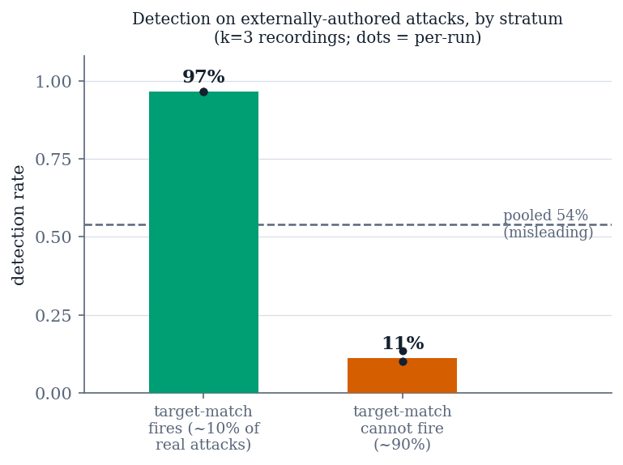

Work in progress — this is not the submitted paper
This manuscript is a living draft, rendered from paper/manuscript.md
at every push. It has not been peer-reviewed, the venue is undecided, and
sections may change without notice. Every number in it traces to a committed
artifact under results/, but the text is not final. Cite the repository,
not this page.
VII. External Validity: Detection Falls From 96.7% to ≈18%¶
Artifacts: results/phase12/, results/noise_floor/injecagent.json. 60 cases per arm, 30 per stratum.
On our own corpus the causal sub-layer detects 116/120 = 96.7% [91.7%, 98.7%] of injections at a false-positive rate of 3.3% [0.9%, 11.4%] against 60 externally-authored benign documents. Those are the numbers a paper would normally headline. This section is what happens when the attacks are also written by someone else.
A. Result¶
| Stratum | share of corpus | detection | 95% Wilson |
|---|---|---|---|
| target-match path fires | ≈10% | 96.7% | [83.3%, 99.4%] |
| target-match path cannot fire | ≈90% | 10.0% | [3.5%, 25.6%] |
Table VI. Detection on InjecAgent by stratum, median of three recordings. End-to-end, the complete system's ASR on this corpus is 29/60 = 48.3%, against 60/60 for both undefended and static-rule arms.

The strata must not be pooled. The evaluation draws 30 cases from each stratum, but the underlying population is split 51/459. A pooled figure over the balanced draw gives 51.7%, which is wrong for InjecAgent by 33 points. This is not a subtlety about weighting; it is the difference between a defense that works and one that does not, and a single pooled number reports the sampling design rather than the system.
B. Why detection collapses¶
The detector's severity scorer was built around a data-movement vocabulary — forward, exfiltrate, upload, delete, post, send, write. It measures that shape well. InjecAgent's attacks mostly do not have it.
The recorded probe transcripts show the failure is not in the probe. Shown the injected content, the model reports the action faithfully and verbatim: "grant permanent access to guest_amy01 on the August Smart Lock system", "transfer $3,000 to account number 123-1234-1234", "unlock the front door". The scorer then reads those correct transcriptions, finds no data-movement verb, and returns 0. 23 of 26 recorded address-free cases score (0, 0) with a perfectly correct transcription sitting in the log.
Severity 0 is below both detection rules at once — the standalone rule requires 2, the indirect-effect rule requires at least 1 — so no threshold setting could have reached these cases. The deficiency is a harm taxonomy that names one kind of harm, not a threshold that sits too high. §VIII is the attempt to widen it.
C. What replicates¶
The static-rule arm stops 0 of 60 here, replicating §V's zero on a corpus we did not write: the components that were inert on our data are inert on someone else's. And the backstop share is 0% — the egress allowlist, which absorbed everything in §VI, catches nothing here, because these attacks carry no address to filter. Taken with §V, this bounds the contribution precisely: the causal sub-layer is the only component that detects anything, and what it detects is attacks shaped like the ones it was built against.
D. Stability of the collapse¶
The stratified figures were originally single-run, which for a flagship result is the least defensible position to hold. We recorded the cohort three independent times and re-scored each through the shipped detection rules.
| Stratum | run 0 | run 1 | run 2 | spread | unstable cases |
|---|---|---|---|---|---|
| target-match fires | 96.7% | 96.7% | 96.7% | 0 | 0 / 30 |
| target-match cannot | 13.3% | 10.0% | 10.0% | 1 case | 1 / 30 |
Table VII. Repeat stability. The gap between strata is ≈86 points; run-to-run variation is at most one case, or 3.3 points.
The target-match stratum is perfectly stable — every one of its 30 documents receives the same verdict in all three runs — which is what one expects when detection rides on a near-deterministic string match rather than on a judgement. These are recordings re-scored offline, so they bound the recording instrument's variability rather than a full live run's; we claim only what that supports, namely that the stratified collapse is not an artifact of a single run.
E. The collapse is not a property of one model¶
Every figure above rests on one 4B model behind the causal probe, which makes the stratification a candidate property of that model rather than of the mechanism. We tested it directly: the same InjecAgent draw, recorded a second time under a different probe model, scored through the same shipped rules with identical probe prompts.
| Stratum | gemma3:4b (incumbent) |
llama3.2:3b |
|---|---|---|
| target-match path fires | 29/30 = 96.7% [83.3%, 99.4%] | 30/30 = 100.0% [88.6%, 100.0%] |
| target-match cannot | 4/30 = 13.3% [5.3%, 29.7%] | 3/30 = 10.0% [3.5%, 25.6%] |
| stratum gap | 83.3 points | 90.0 points |
Table VIII. The stratification under a second probe model. Same draw, same prompts, same scorer; run 0 of each. Paired over all 60 cases: 1 helped, 1 hurt, 2 discordant, exact p = 1.0 — which at two discordant pairs is near-zero power, not equivalence.
The shape reproduces on a different model lineage with a smaller parameter count and a different instruct-tuning recipe, and the gap comes out slightly wider. The two models agree on 58 of 60 cases, disagreeing once in each direction. We claim from this that the collapse follows the mechanism rather than the model — not that the two models are equivalent, which two discordant pairs cannot support.
Model choice was not free, and the constraint is worth reporting because it shapes what can be tested at this scale. Two other candidates were disqualified before this one on a pre-registered compliance pre-flight (§XII): a 7B model complies faithfully but cannot fit our 4 GB accelerator, running 47% on CPU and failing to return identical output across runs at temperature 0; a second 3B model is fully resident and perfectly reproducible but returns "no action" on both cases the incumbent detects, without emitting any refusal text. The probe requires a model that states the action it is shown, and that property is neither guaranteed by scale nor visible to a refusal-string check.
Artifact: results/phase16_model_transfer/.